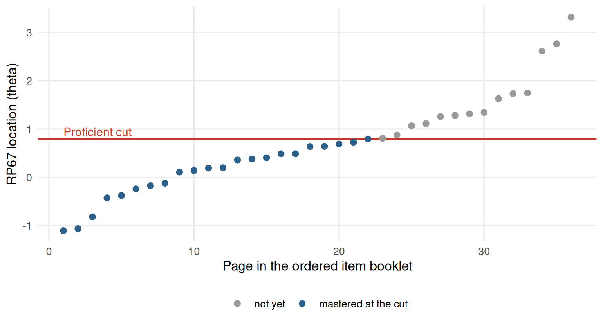

Chapter 12 Cut scores, reporting and communicating results
Learning goals. After this chapter you can
- describe the Bookmark standard-setting method and build an item map at a response probability of 0.67;
- turn a cut on the \(\theta\) scale into a raw-score cut;
- estimate classification accuracy and consistency at a cut score;
- report IRT results to people who do not use R, with a written summary, a report and a dashboard.
Key terms: cut score, standard setting, response probability, classification accuracy, classification consistency, test characteristic curve.
12.1 The ideas
A cut score divides a scale into categories such as pass and fail, or below basic, proficient and advanced. Where the cut goes is a judgement about what performance is good enough, made by people who know the content and the consequences. Standard setting is the family of structured procedures for making that judgement defensibly (Cizek and Bunch 2007).
The Bookmark method is closely tied to IRT. Items are ordered from easiest to hardest in an ordered item booklet, where each item’s location is the \(\theta\) at which a test taker has a fixed probability (usually 0.67, the response probability RP67) of answering it correctly. Each panelist places a bookmark after the last item that a just-qualified candidate should master. The location of the bookmarked item is that panelist’s cut, and the panel’s cut is usually the median over panelists after several rounds of discussion. For a 2PL item, the RP67 location is
\[\theta_{0.67} = b + \frac{\ln(0.67/0.33)}{a}.\]
Once a cut is fixed on the \(\theta\) scale, two numbers describe how well the test sorts people. Classification accuracy is the proportion of people whose estimated category matches their true category. Classification consistency is the proportion who would be placed in the same category on two independent administrations of the test. Both can be estimated from a single administration using the scores and their standard errors (Rudner 2001).
Finally, results have to be communicated. People who make decisions with test scores rarely read item parameters. They need a short, honest summary of what the test measures, how precisely, for whom it works, and what the scores mean.
12.2 Example 1: Setting a proficiency standard
A provincial Grade 6 science test has 36 items. We simulate a calibration on 2,500 students.
# Simulated 36-item science test, 2,500 students.
set.seed(1212)
a <- matrix(rlnorm(36, 0.15, 0.25)); b <- sort(rnorm(36, 0, 1))
resp <- simdata(a, matrix(-a * b), N = 2500, itemtype = "2PL")
colnames(resp) <- sprintf("S%02d", 1:36)mod <- mirt(resp, 1, itemtype = "2PL", verbose = FALSE)
pars <- coef(mod, IRTpars = TRUE, simplify = TRUE)$items
booklet <- data.frame(item = rownames(pars), a = pars[, "a"], b = pars[, "b"])
booklet$rp67 <- booklet$b + log(0.67 / 0.33) / booklet$a
booklet <- booklet[order(booklet$rp67), ]
booklet$page <- seq_len(nrow(booklet))
head(booklet, 8)
#> item a b rp67 page
#> S02 S02 1.924 -1.473 -1.105 1
#> S01 S01 0.928 -1.827 -1.064 2
#> S03 S03 1.243 -1.387 -0.818 3
#> S05 S05 1.335 -0.955 -0.425 4
#> S06 S06 1.118 -1.011 -0.377 5
#> S04 S04 0.833 -1.090 -0.239 6
#> S08 S08 1.245 -0.741 -0.173 7
#> S10 S10 1.931 -0.488 -0.121 8The ordered item booklet is booklet, one page per item. Suppose eight
panelists, after two rounds of discussion, place their bookmarks for
proficient on these pages:
bookmarks <- c(20, 22, 21, 23, 22, 24, 21, 22)
panel_cuts <- booklet$rp67[bookmarks]
theta_cut <- median(panel_cuts)
c(theta_cut = theta_cut, spread = sd(panel_cuts))
#> theta_cut spread
#> 0.7943 0.0586The standard deviation of the panelists’ cuts, divided by the square root of the number of panelists, is a rough standard error of the panel’s cut. It should be reported alongside the cut.
Teachers and parents see raw scores, so we convert the cut with the test characteristic curve: The expected number correct at \(\theta\).
raw_cut <- expected.test(mod, matrix(theta_cut))
c(theta_cut = theta_cut, expected_raw = raw_cut, raw_cut = ceiling(raw_cut))
#> theta_cut expected_raw raw_cut
#> 0.794 24.583 25.000How many students are classified as proficient, and how accurately?
sc <- fscores(mod, full.scores.SE = TRUE)
above <- sc[, 1] >= theta_cut
p_above <- pnorm((sc[, 1] - theta_cut) / sc[, 2])
c(percent_proficient = mean(above),
accuracy = mean(ifelse(above, p_above, 1 - p_above)),
consistency = mean(p_above^2 + (1 - p_above)^2))
#> percent_proficient accuracy consistency
#> 0.204 0.925 0.893Accuracy compares each student’s category with where their true score probably lies; consistency asks how often two independent testings would agree (here approximated from each student’s posterior probability of being above the cut). Consistency is always the lower of the two, because both testings carry error.
An item map makes the cut concrete for teachers: It shows which items a just-proficient student is likely to answer correctly (the items below the line). Printing the text of a few items on each side of the line is a good way to describe what proficient means.
library(ggplot2)
ggplot(booklet, aes(page, rp67, colour = rp67 <= theta_cut)) +
geom_hline(yintercept = theta_cut, colour = "#C0392B", linewidth = 0.8) +
geom_point(size = 2) +
annotate("text", x = 1, y = theta_cut + 0.15, label = "Proficient cut",
colour = "#C0392B", hjust = 0, size = 3.5) +
scale_colour_manual(values = c(`TRUE` = "#2C5F8A", `FALSE` = "grey60"),
labels = c(`TRUE` = "mastered at the cut", `FALSE` = "not yet")) +
labs(x = "Page in the ordered item booklet", y = "RP67 location (theta)",
colour = NULL) +
theme_mirtverse()
Figure 12.1: Item map of the ordered item booklet with the proficient cut score.
In a real programme, item_map() and set_cuts() in the assessment
pipeline
produce the booklet, record the panel’s judgements, and report impact and
classification statistics for several cuts at once.
12.3 Example 2: Telling the story
We return to the attitude scale from Chapter 8 to show the reporting tools on a different kind of instrument.
select_model() and interpret() give a plain-language summary that is a
good first draft for the methods and results sections of a report:
sel <- select_model(resp, verbose = FALSE)
interpret(sel$best)
#> Overview
#> --------
#> * A graded model with 1 dimension was fitted to 392 respondents and 4 items
#> (EM estimation).
#> * The estimation converged normally.
#>
#> Model fit
#> ---------
#> * Overall model fit is poor: C2 = 19.18, df = 2, RMSEA = 0.148, CFI = 0.910,
#> SRMSR = 0.073.
#>
#> Reliability
#> -----------
#> * Marginal reliability is 0.67 (low).
#> * Scores are too imprecise for decisions about individuals; consider adding
#> items or using the scores only for group-level summaries.
#>
#> Targeting
#> ---------
#> * The average item location is -0.99 and the average person score is 0.00, so
#> the test is relatively easy for this group.
#> * Measurement is most precise around theta = -2.20 (information = 2.42, SE =
#> 0.64).
#>
#> Items
#> -----
#> * No items were flagged for low discrimination, extreme location, or misfit.
#>
#> Local dependence
#> ----------------
#> * 1 item pair shows possible local dependence (Q3 exceeds the average of
#> -0.19 by more than 0.2).
#> * Strongest: Comfort & Benefit (Q3 = 0.08).
#> * Check whether these items share a stimulus, wording, or content; consider a
#> testlet or bifactor model.
#>
#> Person fit
#> ----------
#> * 4.8% of respondents have unusual response patterns (Zh < -1.96), which is
#> within what chance alone would produce.Read it critically before you use it: It flags the poor absolute fit and the low precision, and a careful report says what that means for the intended use of the scores.
interpret_prompt() packages the same results into a prompt you can paste
into an AI assistant to draft a longer narrative. Nothing is sent anywhere.
For people who want to see everything, mirtverse writes a complete HTML report in one call, with the model comparison, the interpretation, tables, figures, a sum-score conversion table, item health cards and the code to reproduce it:
For people who want to explore, a dashboard lets them move an ability slider, click through items and download tables, without R:
mv_dashboard(sel$best, title = "Attitudes to science")
export_dashboard(sel$best, "science-dashboard.html", format = "html")See Sharing results with a dashboard for the options.
12.3.1 A one-page memo
Decision makers usually want one page. A structure that works:
- The question. What decision will the scores support?
- The answer. One or two sentences: Can the test support it?
- The evidence. Three to five bullets: Precision where the decision is made, classification accuracy, fairness checks, any items removed.
- What it means. The consequences of the cut for the people tested, for example the percentage classified in each category and how many are close to the cut.
- Recommendations and limits.
12.4 Your turn
- In Example 1, how many raw-score points does the cut move if every panelist moves their bookmark one page later?
- Repeat the item map with RP50 instead of RP67. Does the cut move up or down? Why does the choice of response probability matter to panelists?
- Add a second cut for advanced at page 30. Estimate the accuracy of the three-category classification.
- Write the “answer” and “evidence” parts of a memo about the proficiency cut in Example 1.
Solutions
cut_later <- median(booklet$rp67[bookmarks + 1])
c(expected.test(mod, matrix(theta_cut)), expected.test(mod, matrix(cut_later)))
#> [1] 24.6 24.7
rp50 <- sort(booklet$b)
c(rp67_cut = theta_cut, rp50_cut = median(rp50[bookmarks]))
#> rp67_cut rp50_cut
#> 0.794 0.100
adv <- median(booklet$rp67[rep(30, 8)])
cats <- cut(sc[, 1], c(-Inf, theta_cut, adv, Inf), labels = c("below", "proficient", "advanced"))
p_cat <- cbind(pnorm((theta_cut - sc[, 1]) / sc[, 2]),
pnorm((adv - sc[, 1]) / sc[, 2]) - pnorm((theta_cut - sc[, 1]) / sc[, 2]),
1 - pnorm((adv - sc[, 1]) / sc[, 2]))
mean(p_cat[cbind(seq_len(nrow(p_cat)), as.integer(cats))])
#> [1] 0.88- Hardly at all here, because the items in that part of the booklet have very similar RP67 locations. Where the booklet has gaps between items, a single page can move the cut a lot, which is worth showing panelists.
- With RP50 every item’s location is lower, so the same bookmark gives a lower cut. Panelists must understand what “mastered” means (a 50% or a 67% chance), or their bookmarks will not mean what they intend.
- For example: “The test can support a proficient/not proficient
decision. About 93% of students are expected to be classified correctly,
and 89% would be classified the same way if tested again. The panel’s
eight judgements were close together, and about one student in five is
classified as proficient.” Use the numbers from your own output, and add
the standard error at the cut (
1 / sqrt(testinfo(mod, matrix(theta_cut)))).
In the lab
The course map ends with a final project: A full analysis of a dataset of
the student’s choice, handed in as an mv_report() or a dashboard plus a
two-page memo. The assessment
pipeline
is a useful checklist for it.
Further reading
Cizek and Bunch (2007) describe the Bookmark method and other standard-setting procedures. Rudner (2001) shows how to estimate classification accuracy from IRT results. The Standards (American Educational Research Association et al. 2014) set out what to report about cut scores.